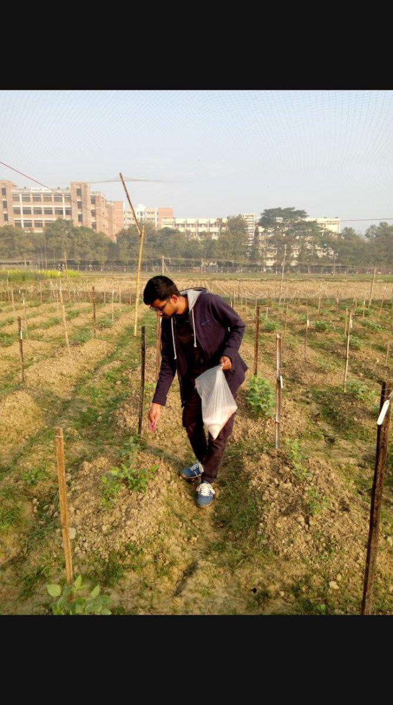

Consistent scoring is the backbone of useful trial data. A short, shared checklist keeps teams aligned when several people walk the same plots.
Use the same scale (e.g. 1–5 or 1–9) every season. Train new scorers with photo examples. Score the same time of day when possible, and note weather if it affects visibility or plant wilting.
Print the sheet, or keep a simple digital form offline-ready for the field. Clean data at the plot level makes later analysis in R far smoother.